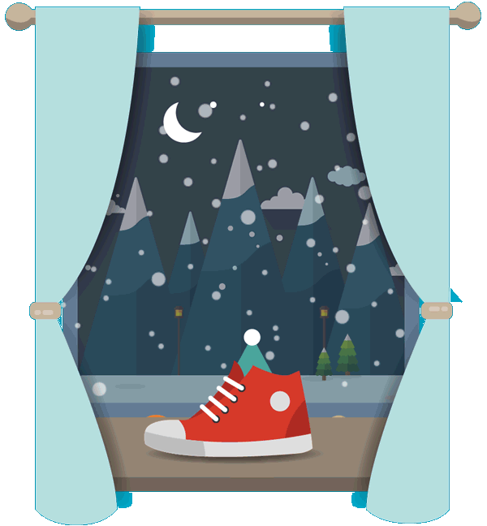

<!DOCTYPE html>
  <!--[if (gte IE 9)|!(IE)]><!--><html lang="en"> <!--<![endif]-->
  <head>
    <title>LookBookHQ Holiday</title>
    <meta name="author" content="Thomas Cheng">
    <meta name="viewport" content="width=device-width, initial-scale=1, maximum-scale=1, user-scalable=no">
    <link href="http://fonts.googleapis.com/css?family=Raleway:300,900" rel="stylesheet" type="text/css">
    <link href="main.css" rel="stylesheet" type="text/css">
  </head>
  <body style="background-color: #00a9c9">
    <div class="main">
      <div class="image image-ice-yule">
        
      </div>
      <div class="text">
        <h1>Naughty or nice? The Yule Lads Know!</h1>
        <p class="date">January 6, 2017</p>
        <p>
          In Iceland, children put their best foot forward at Christmas. From December 12th to the 23rd, Icelandic kids leave a shoe on their windowsill. While they sleep each night, 13 magical Yule Lads climb down from the mountains to leave gifts in the shoes of well-behaved children. Naughty kids end up with a potato instead! Originally, the Yule Lad tradition had a more sinister tone and many parents used their mysterious nighttime visits to scare their children into behaving.
        </p>
      </div>
    </div>
  </body>
</html>
